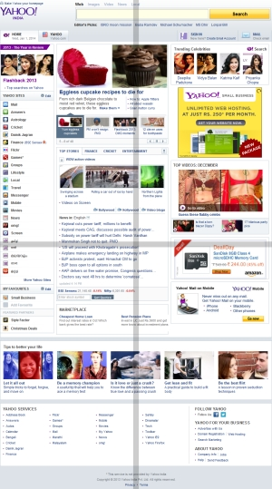
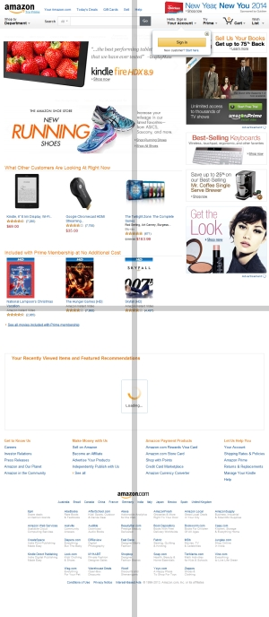
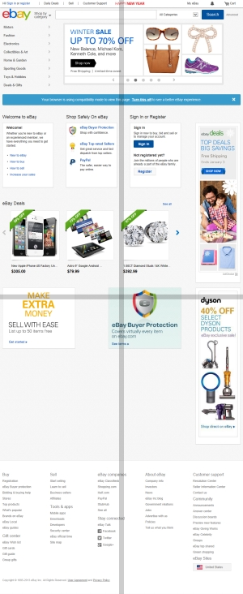

Why there is gray cross watermark on the image?
For development purpose you can use the downloaded trial version which has all the features enabled for an unlimited period of time. Unlike the full version, the trial version produces image with GRAY CROSS WATERMARK. If you wish to use our product without watermark limitation you must purchase a full version. We are very confident in our product, the downloaded evaluation version has all the features enabled and it never expires. This way we encourage you to try the demo version both in your development and production environment to make sure the component responds entirely to your needs before buying, we offer free technical support by email to get our component working in your environment.
Trial version output (with cross watermark)
| www.yahoo.com  |
| www.amazon.com  |
| www.ebay.com  |